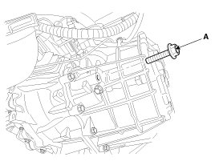
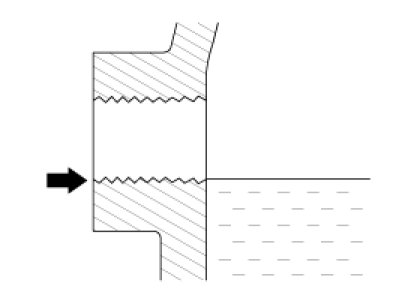
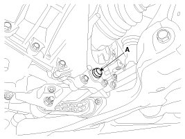

Procedures
Inspection
Manual Transaxle Oil Inspection
1. Park the vehicle on a level ground and stop the engine.
2. Loosen the oil filler plug (A).

3. Check level with finger.
NOTE:
- Oil level must be up to fill the hole, if not, add oil until it runs over.

4. Install the filler plug with a new gasket.
Tightening torque:
58.9 - 78.5 N.m (6.0 - 8.0 kgf.m, 43.4 - 57.8 lb-ft)
Manual Transaxle Oil Replacement
1. Park the vehicle on a level ground and stop the engine.
2. Drain the manual transaxle oil after loosening the drain plug (A).

3. Install the drain plug with a new gasket.
Tightening torque:
58.9 - 78.5 N.m (6.0 - 8.0 kgf.m, 43.4 - 57.9 lb-ft)
4. Add new oil through the filler plug hole and, fill it just below the plug opening.
Standard oil:SAE 75W/85, API GL-4
Oil capacity:1.9L (0.50 U.S.gal., 2.0 U.S. qt., 1.67 lmp qt.)